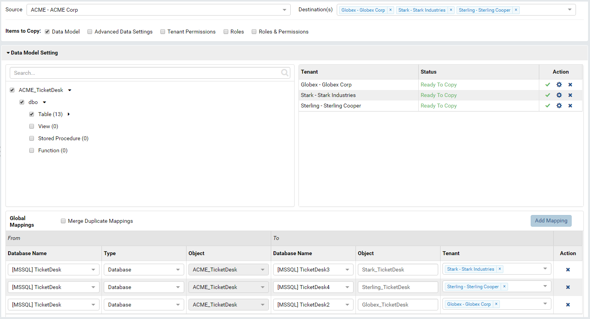
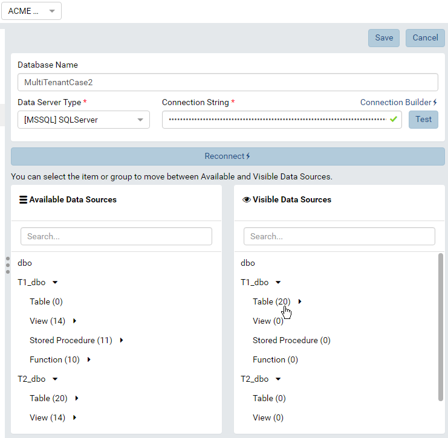
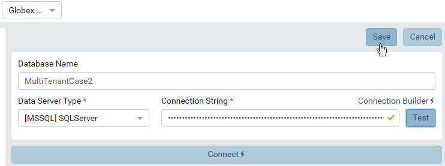
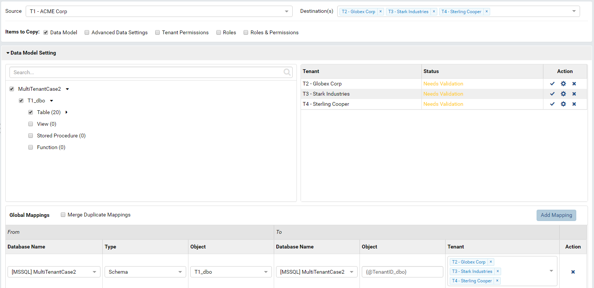
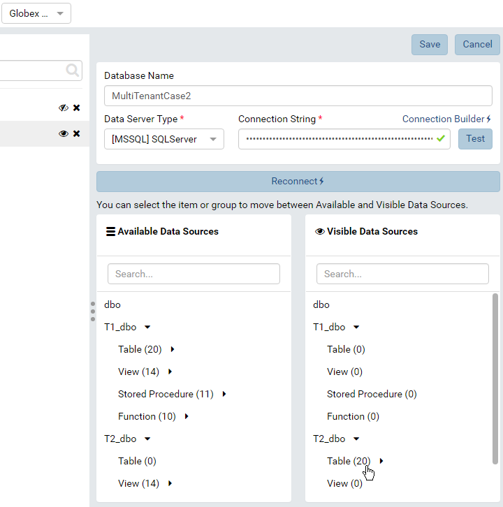

Tenant Setup for Multi-tenant Architectures¶
New in version 2.0.0: Global Report feature can be used to share system reports among all tenants, see Global Report Setup Guide.
In multi-tenant systems, tenant data is stored in similar database structures placed in
- different databases - Separate Database Architecture
- different schemas in the same database - Separate Schema Architecture
- same tables, schemas and databases - Shared Schema Architecture
Separate Database Architecture¶
Each tenant data is
stored in a separate database with identical structure.
{kind=link}
Fig. 132 Sample Separate Database Architecture
Add connections to each tenant database at that tenant level.
In this sample, create 4 tenants each having one connection to its database.
Data model and other settings should be set up for one tenant, then copied to other tenants using a Copy Management setting similar to the following:
Fig. 133 Copy Management for Separate Database Architecture
{kind=link}
Separate Schema Architecture¶
Each tenant data is stored in a separate schema in the same database.
Add connections to the shared database at that each tenant level.
Set up data model for one source tenant only.
Fig. 134 Connection and Data Model for one Source Tenant
Skip data model for other tenants (Just add the connection, test then save it).
Fig. 135 Connection for other Destination Tenants
Copy data model to other tenants using a Copy Management setting similar to the following:
Fig. 136 Copy Management for Separate Schema Architecture
The data model was successfully copied to other tenants.
Fig. 137 Copied Data Model
{kind=link}
{kind=link}
{kind=link}
{kind=link}
{kind=link}
{kind=link}
{kind=link}
{kind=link}